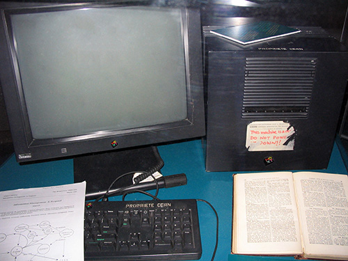

En el número de mayo de 1970 de la revista Popular kjence, Arthur c. Clarke predijo que algún día los satélites "llevarán el nocimiento acumulado del mundo a sus manos" con una consola que combinara la funcionalidad de la fotocopiadora, teléfono, televisión y un pequeño ordenador? que permitirá la transerencia de datos y videoconferencia en todo el mundo
Er rnrzo de 1989\ Tim Berlers-Lee escribió ura propuest que hce referenci ENQUIRE, ur bse de dtos y proyectos de somvre que hbí3 construído el 1980 y describe ur sisteln de gestiót de | irforrnciól ms elbordo
La idea subyacente de la Web se remonta a la propuesta de Vannevar Bush en los años 40 sobre un sistema similar: a grandes rasgos, un entramado de información distribuida n una interfaz operativa que permitía el aeso tanto a la misma mo a otros artículos relevantes determinados por claves. Este proyecto nunca fue materializado, quedando relegado al plano teóri bajo el nombre de Memex. Es en los años 50 cuando Ted Nelson realiza la primera referencia a un sistema de hipertexto, donde la información es enlazada de forma libre. Pero no es hasta 1980, n un soporte operativo tecnológi para la distribución de información en redes informáticas, cuando Tim Berners-Lee propone ENQUIRE al CERN (refiriéndose a fnqujre Wr'fhjn Upon fverythjng, en castellano Preguntando de Todo bre Todo), donde se materializa la realización práctiGa de este ncepto de incipientes nociones de la Web
Er rnrzo de 1989. Tim Berlers Lee, y como persol| de | divisiór DD del CERN. redct lcF propuest, que referercíb ENQUIRE y describí ul sistem de gestión de inforrncíón más elbordo. No hubo ul butizo ofici| o ur curierto del térmiro Web el ess reterencis iticiles, utilizrdose pr t| efecto el térrnílo nesh. Sir embrgo, el World Wíde Web ya hbí ncido_ Cor | yud de Robert Chillìu, se publicó ul propuest ms form| par | World Wide Web el 6 de gosto de 1991
Er rnrzo de 1989. Tim Berlers Lee, y como persol| de | divisiór DD del CERN. redct lcF propuest, que referercíb ENQUIRE y describí ul sistem de gestión de inforrncíón más elbordo. No hubo ul butizo ofici| o ur curierto del térmiro Web el ess reterencis iticiles, utilizrdose pr t| efecto el térrnílo nesh. Sir embrgo, el World Wíde Web ya hbí ncido_ Cor | yud de Robert Chillìu, se publicó ul propuest ms form| par | World Wide Web el 6 de gosto de 1991
El 6 de agosto de 1991, envió un pequeño resumen del proyecto World Wide Web al newsgroup alt.hypertext. Esta fecha también señala el debut de la Web como un servicio disponible públicamente en Internet.
El concepto, subyacente y crucial, del hipertexto tiene sus orígenes en viejos proyectos de la década de los 60, como el Proyecto Xanadu de Ted Nelson y el sistema on-line NLS de Douglas Engelbart. Los dos, Nelson y Engelbart, estaban a su vez inspirados por el ya citado sistema basado en microfilm "memex", de Vannevar Bush.
El gran avance de Berners-Lee fue unir hipertexto e Internet. En su libro Weaving the Web (en castellano, Tejiendo la Red), explica que él había sugerido repetidamente que la unión entre las dos tecnologías era posible para miembros de las dos comunidades tecnológicas, pero como nadie aceptó su invitación, decidió, finalmente, hacer frente al proyecto él mismo. En el proceso, desarrolló un sistema de identificadores únicos globales para los recursos web y también: el Uniform Resource Identifier.
World Wide Web tenía algunas diferencias de los otros sistemas de hipertexto que estaban disponibles en aquel momento:
- WWW sólo requería enlaces unidireccionales en vez de los bidireccionales. Esto hacía posible que una persona enlazara a otro recurso sin necesidad de ninguna acción del propietario de ese recurso. Con ello se reducía significativamente la dificultad de implementar servidores web y navegadores (en comparación con los sistemas anteriores), pero en cambio presentaba el problema crónico de los enlaces rotos. - A diferencia de sus predecesores, como HyperCard, World Wide Web era no-propietario, haciendo posible desarrollar servidores y clientes independientemente y añadir extensiones sin restricciones de licencia. El 30 de abril de 1993, el CERN presentó la World Wide Web de forma pública.
La primera página de Internet fue creada por Tim Berners-Lee en 1991 mediante un computador NeXT, el funcionamiento de esta como lo han sido todas las páginas de Internet era informar sobre la World Wide Web. En la página se define la hipermedia y muestra un ejemplo de como sería una página en hypertexto, se enseña como contribuir a la Web, menciona a las personas involucradas en ese proyecto, cómo se clasifica la información en la Web, los servidores y softwares que existían, enseña cómo insertar una bibliografía, proporciona la terminación de cada tipo de software que existe para así identificarlo más facilmente, menciona el nacimiento de la página, da a conocer el colisionador de partículas CERN, e incluso viene un manual de usuario para utilizar la World Wide Web y proporciona ayuda en línea en los softwares Line Mode Browser, NeXTStep y MidasWWW. Toda esta información se muestra en cuatro links en la página principal. Esta página web se abrió el 30 de abril de 1993, durante mucho tiempo dejó de existir esta página, pero la abrieron 20 años después el 30 de abril de 2013 como conmemoración del nacimiento de la tecnología web.
ViolaWWW fue un navegador bastante popular en los comienzos de la Web que estaba basado en el concepto de la herramienta hipertextual de software de Mac denominada HyperCard. Sin embargo, los investigadores generalmente están de acuerdo en que el punto de inflexión de la World Wide Web comenzó con la introducción del navegador web Mosaic en 1993, un navegador gráfico desarrollado por un equipo del NCSA en la Universidad de Illinois en Urbana-Champaign (NCSA-UIUC), dirigido por Marc Andreessen. El apoyo para desarrollar Mosaic vino del High-Performance Computing and Communications Initiative, un programa de fondos iniciado por el entonces gobernador Al Gore en el High Performance Computing and Communication Act of 1991, también conocida como la Gore Bill. Antes del lanzamiento de Mosaic, las páginas web no integraban un amplio entorno gráfico y su popularidad fue menor que otros protocolos anteriores ya en uso sobre Internet, como el protocolo Gopher y WAIS. La interfaz gráfica de usuario de Mosaic permitió a la WWW convertirse en el protocolo de Internet más popular de una manera fulgurante...